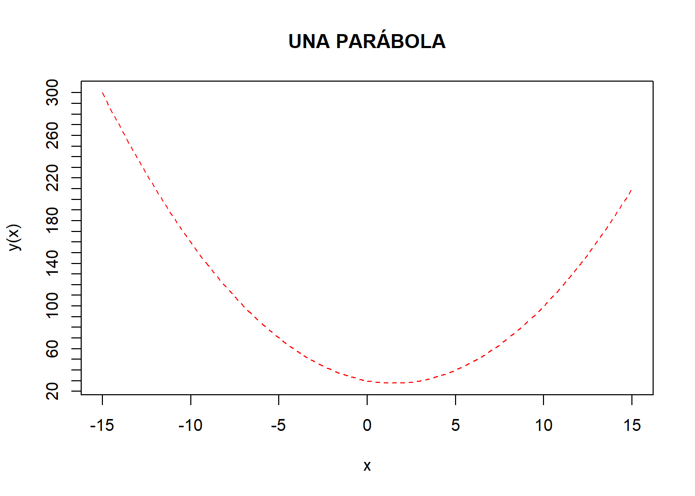

library(dplyr)Semana 1
Ejemplo 1 (Creación y utilización de variable)
En est ejemplo se utilizara la libreria dplyr que empleará filter.
Puede ser útil emplear una lista para una condición. En ese caso se ha de realizar.
setosa <- iris %>%
filter(Species=="setosa")
head(setosa, 5) Sepal.Length Sepal.Width Petal.Length Petal.Width Species
1 5.1 3.5 1.4 0.2 setosa
2 4.9 3.0 1.4 0.2 setosa
3 4.7 3.2 1.3 0.2 setosa
4 4.6 3.1 1.5 0.2 setosa
5 5.0 3.6 1.4 0.2 setosaLa función table realiza tablas de frecuencia (cuenta registros), en este caso se tienen los tres posibles valores que toma la variable Species con el número de registros que tiene cada elemento de la variable, el número de registros que tiene cada nivel del factor, hay un factor que no tiene registros, no desaparece el nivel, simplemente aparece con 0 observaciones.
species_to_select = c("setosa","virginica")
species <- iris %>%
filter(Species %in% species_to_select)
table(species$Species)
setosa versicolor virginica
50 0 50 Ejemplo 2 (Implementacion de ejemplos graficos)
Se procede a dibujar el gráfico de la función y=x^2−3x+30 entre −15 y 15. De título, poner “Una parábola”. De etiquetas, en el eje 0X, en formato matemático, “x”; y en el eje 0Y, introducir y=x2−3x+30 , también en formato matemático.Se utiliza la función curve()
y<-function(x){x^2-3*x+30}
plot(y, xlim = c(-15,15), main = "UNA PARÁBOLA", xlab = expression(x), ylab = expression(x^2-3*x+30), col = "blue")curve(y, xlim = c(-15,15), col = "red", lty = 2, xaxp = c(-15,15,6), yaxp = c(0,300,30), main = "UNA PARÁBOLA")
Ejemplo 3 (Libreria lubridate)
En este ejemplo se procede a utilizar las siguientes librerias
library(lubridate)
library(tidyverse)En este paso se procede ha asignar una fecha a cada variable.
date1 <- as_date("2018-04-16")
date2 <- as_date("2018-05-16")Luego de asignar las fechas estipuladas, se procede a contar la cantidad de dias que hay entre una fecha y la otra automaticamente
date2-date1Time difference of 30 daysAsignación 1
Se coloca las librerias que utilizaremos
library(DT)En esta parte se procede seleccionar el archivo donde se tranajará.
Luego de seleccionar y leer el archivo con nombre lista-empresa.csv, se procede ha selecionar la tabla etiqueta y Link con la función selec que serán donde se trabajará los datos.
documento_csv <- read.csv("C:\\Users\\anton\\OneDrive\\Documentos\\Ejemplos_R\\lista-empresas.csv")
Etiqueta_csv <-select(documento_csv, Etiqueta)
Link_csv <-select(documento_csv, Link)En esta parte se procede a crear una variable con nombre hipervinculo, en la misma se acumulará los link y los nombres de cada banco que aparece en Etiquetas.
Hipervinculo <- list()
for (indice in 1:length(Etiqueta_csv$Etiqueta)){
Etiqueta <- (getElement(Etiqueta_csv$Etiqueta, indice))
Link <- (getElement(Link_csv$Link, indice))
Hipervinculo <- c(Hipervinculo, paste0("<a href=",Link,">",Etiqueta,"</a>"))
}Luego de haber optenido los link y las etiquetas, se procede a transformar los resultados a data.frame.
Direccion_url <- Hipervinculo %>% do.call(rbind,.) %>% data.frame(Paginas = .)En este paso se realiza un filtro de las tablas que se desea mostrar, en este caso sería industria, departamentos y la direccion_url que contiene almacenados los hipervinculos con las direcciones web de cada banco.
Filtro_final <-select(documento_csv, Industria, Derpartmento) %>% cbind(.,Direccion_url)Por ultimo se imprime la variable que contiene todos los resultados implementados anteriormente
Filtro_final %>% datatable(escape = FALSE)Asignacion 2
Librerias que vamos ha utilizar
library(DT)
library(readxl)Se ubica el archivo que vamos a leer en formato xlsx, y se sub-divide las columnas que vamos a trabajar
documento <- read_xlsx("C:\\Users\\anton\\OneDrive\\Documentos\\Ejemplos_R\\Datos_ejemplo_2.xlsx")
Categoria_xlsx <- select(documento, Category)
Link_xlsx <- select(documento, Link)Se realiza la operacion de implementar el hipervinculo, utilizando el link de las paginas y las categorias asignadas
Hipervinculo <- list()
for (indice in 1:length(Categoria_xlsx$Category)){
Category <- (getElement(Categoria_xlsx$Category, indice))
Link <- (getElement(Link_xlsx$Link, indice))
Hipervinculo <- c(Hipervinculo, paste0("<a href=",Link,">",Category,"</a>"))
Hipervinculo
}Se determina los link que vamos a utilizar
Direccion_url <- Hipervinculo %>% do.call(rbind,.) %>% data.frame(Paginas = .)Se procede a seleccionar la tabla que vamos a imprimir, en este caso la de Area y imprimimos los resultados optenidos en la variable Direccion_url
Filtro_final <-select(documento, Area) %>% cbind(.,Direccion_url)En este ultimo paso se imprime los resultados en formato datatable
Filtro_final %>% datatable(escape = FALSE)Asignacion 3
Se plantea la libretia que se utilizará
library(stringr)Se selecciona el archivo que se ejecutara
documento_original <- read.csv("C:\\Users\\anton\\OneDrive\\Documentos\\Ejemplos_R\\DatosPeronales.csv")En este paso se selecciona el archivo que se ejecutara, se procede a seleciconar las columnas que se dividirán y se restructura la tabla en 4 columnas, que seria nombre, edad, provincia y distrito
documento_dividido <- (documento_original %>% separate(Nombre, into = c("Nombre", "Edad"), sep = "[/-]") %>% separate(Dirección, into = c("Provincia", "Distrito"), sep = "-"))
datatable(documento_dividido)Asignación 3 (Convertir PDf a XLSX)
Estas serian las librerias a utilizar.
library(DT)
library(readxl)Luego de convertir el archivo PDF a xlsx se procede a leer el archivo y imprimirlo en un datatable.
Debo mencionar que para convertir el documento utilicé un convertidor online llamado Adobe.
datatable(Archivo_Excel_Nuevo<-read_xlsx("C:\\Users\\anton\\OneDrive\\Documentos\\Ejemplos_R\\datos_energia.xlsx"))